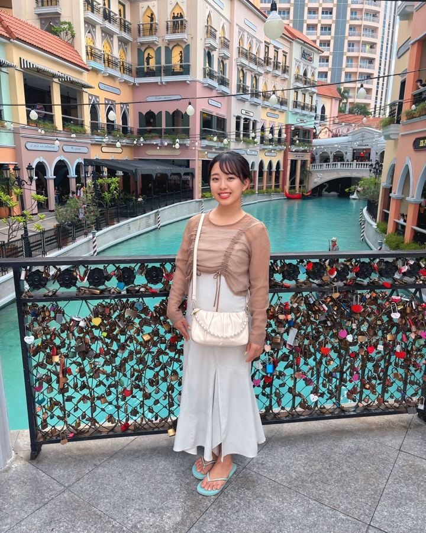
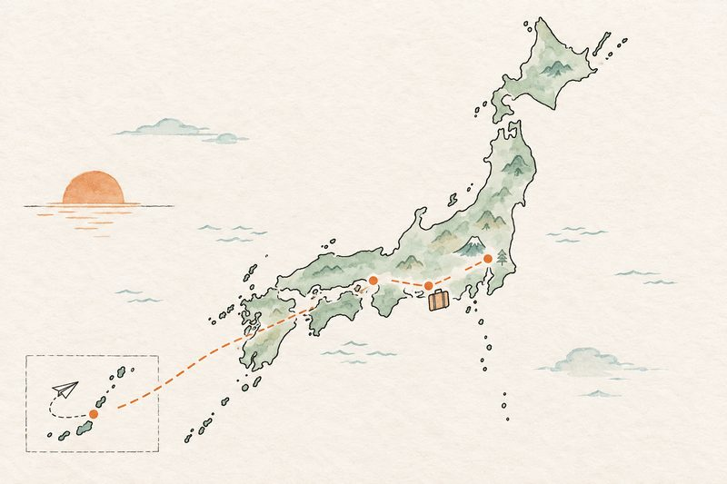
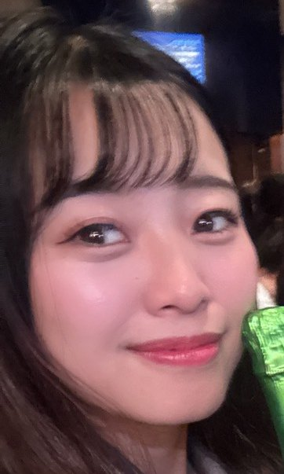
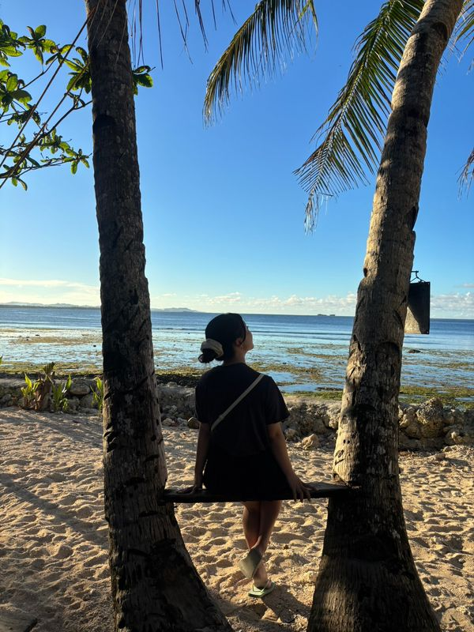
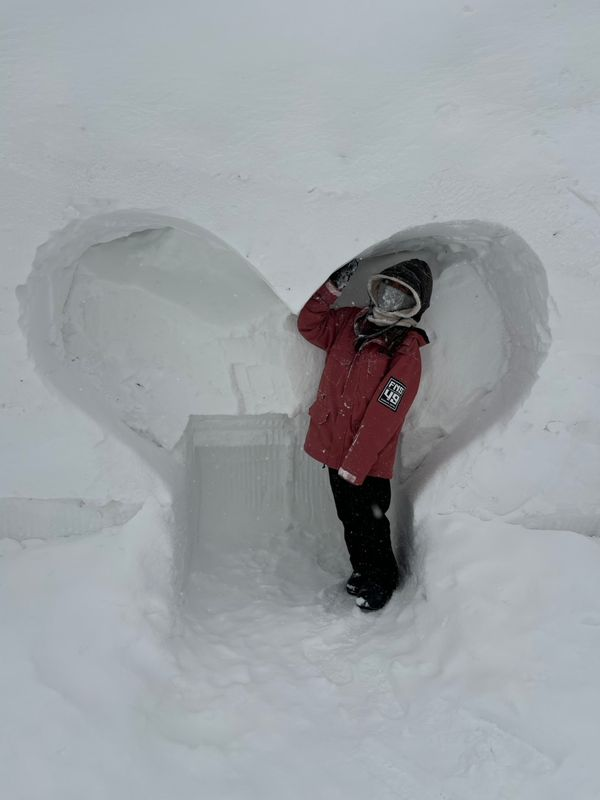

01
静岡から、何も知らないまま東京へ
From Hamamatsu to Tokyo
静岡県浜松市で
2022年4月に
ABOUT BELOOM

個人事業の
美しくBeautiful
+咲くBloom
=美咲Beloom
PHILOSOPHY
人生を
自分らしく
MY STORY

東京・赤坂いま 浜松 大阪 沖縄01
From Hamamatsu to Tokyo
静岡県浜松市で
2022年4月に
02
Okinawa, then Osaka
もっと
その
最初は、
もっと
03
What I Really Wanted

営業代行の
一方で、
いまの
CAREER
新しい
BARらびりんすの
社長の
営業代行の
好きな
地元の
2001年生まれ。
NOW
赤坂の
店舗責任者を
男女の
最近は、
STRENGTHS
私にとっての
らびりんすに
FUTURE
これからは、
子ども食堂の
静岡県人会の
NEXT
来年の
新しい
FAVORITES


海外旅行が
キャンプにもはまりたいと
CONTACT
新しい
BARらびりんす 港区赤坂・赤坂駅から